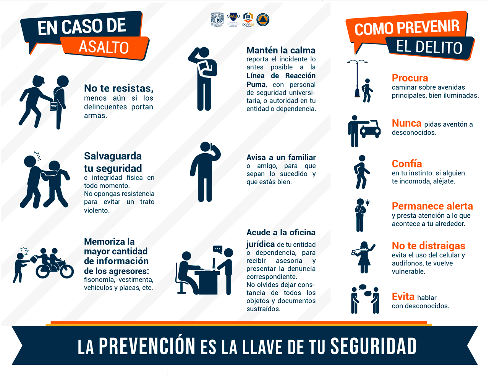

Conclusión: La Prevención es la Clave
A lo largo de estas páginas hemos explorado cómo la criminalística actúa después de que el daño está hecho, recolectando evidencias físicas, y cómo la criminología busca el origen de esa conducta criminal en la mente y el entorno de la sociedad.
Sin embargo, el objetivo definitivo de las ciencias forenses y sociales no es solo llenar las cárceles, sino evitar que los crímenes sucedan en primer lugar. La prevención del delito es el paso más importante para garantizar un entorno seguro.


Al administrar y analizar los datos que arrojan estas disciplinas, las instituciones y los gobiernos pueden implementar medidas preventivas efectivas, tales como:
- Prevención Primaria: Programas educativos, oportunidades de empleo, y mejora en la infraestructura urbana.
- Prevención Secundaria: Identificación de jóvenes y grupos vulnerables en riesgo de caer en conductas antisociales para brindarles intervención temprana.
- Prevención Terciaria: La rehabilitación y reinserción social de aquellos que ya cometieron un delito, evitando que reincidan en el futuro.
Para concluir, la justicia es un engranaje complejo. Requiere de médicos, psicólogos, técnicos en laboratorios, programadores y sociólogos trabajando juntos. Resolver un misterio forense es, al final del día, reconstruir la verdad para poder construir un futuro más seguro para todos.